Our work
Real WeCare projects across Central Arkansas — each one designed around how the family wanted to live, gather, and use their space. We're adding more as we photograph them.
More of our work
Patios, carved concrete artistry, water features, stonework, fire features and more — a wider look at what we build across Central Arkansas.
Patios, walkways & steps
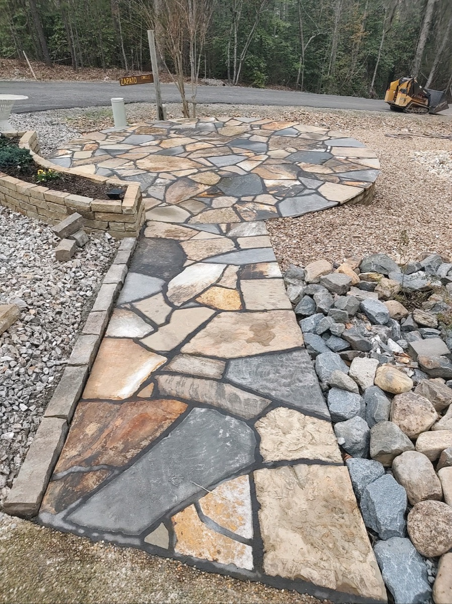
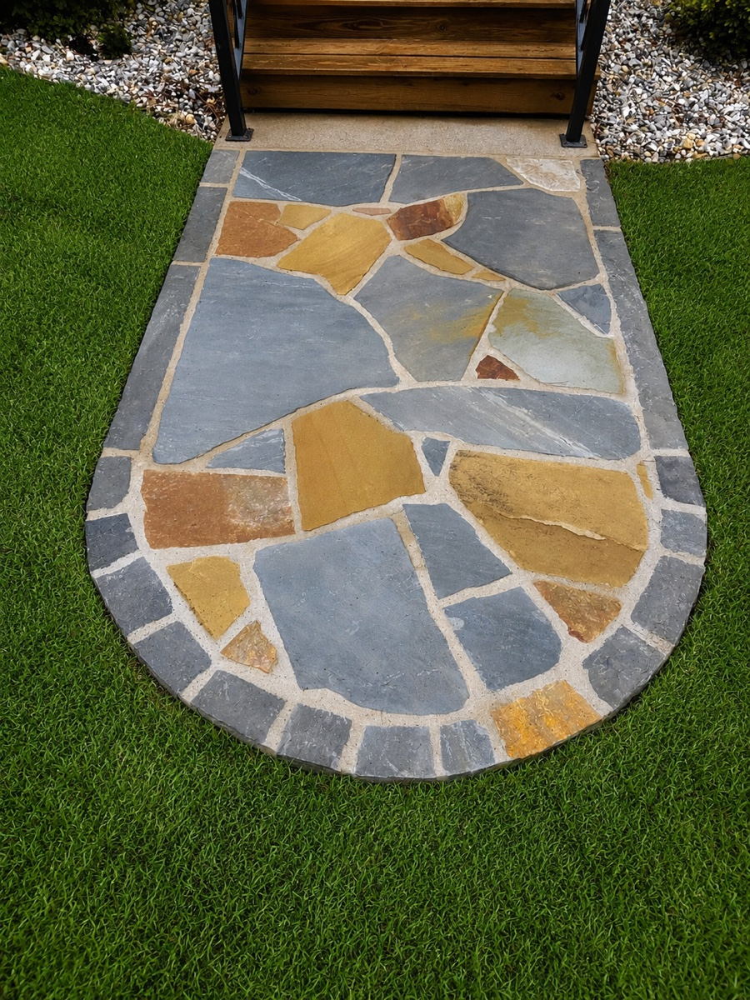
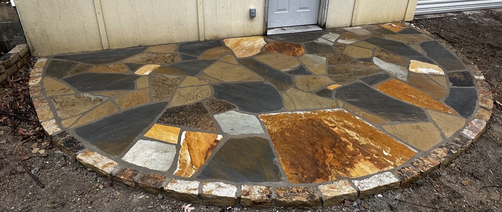
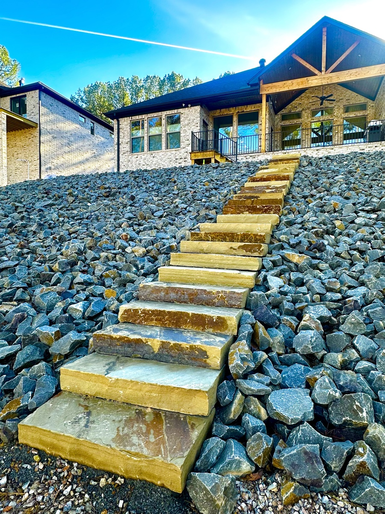
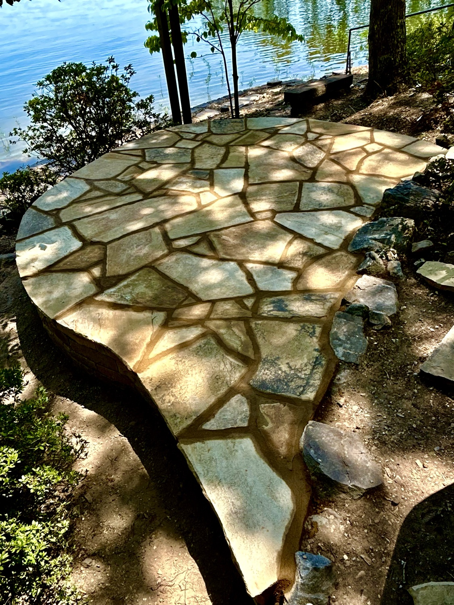

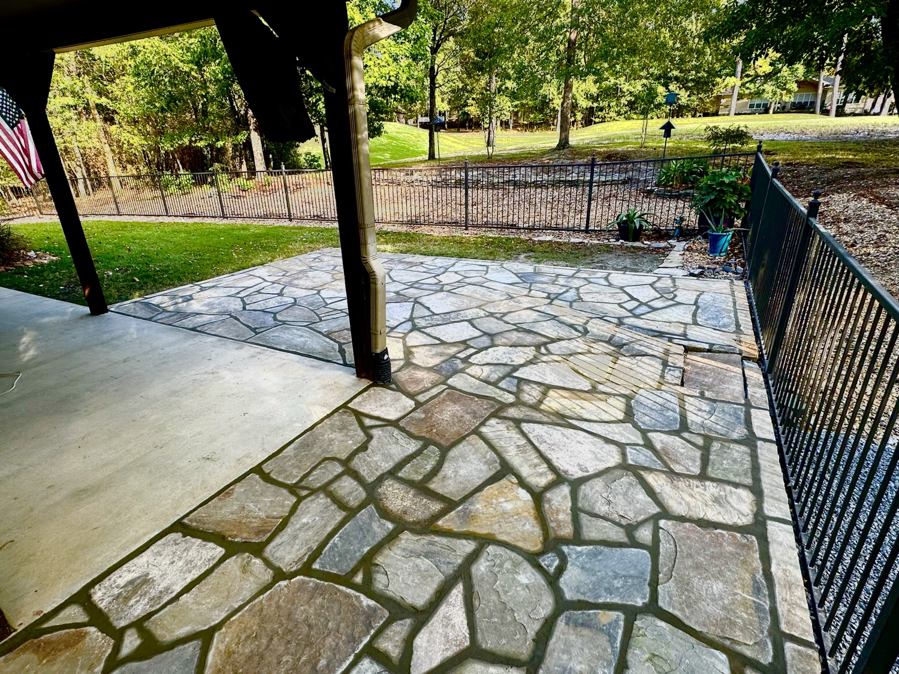

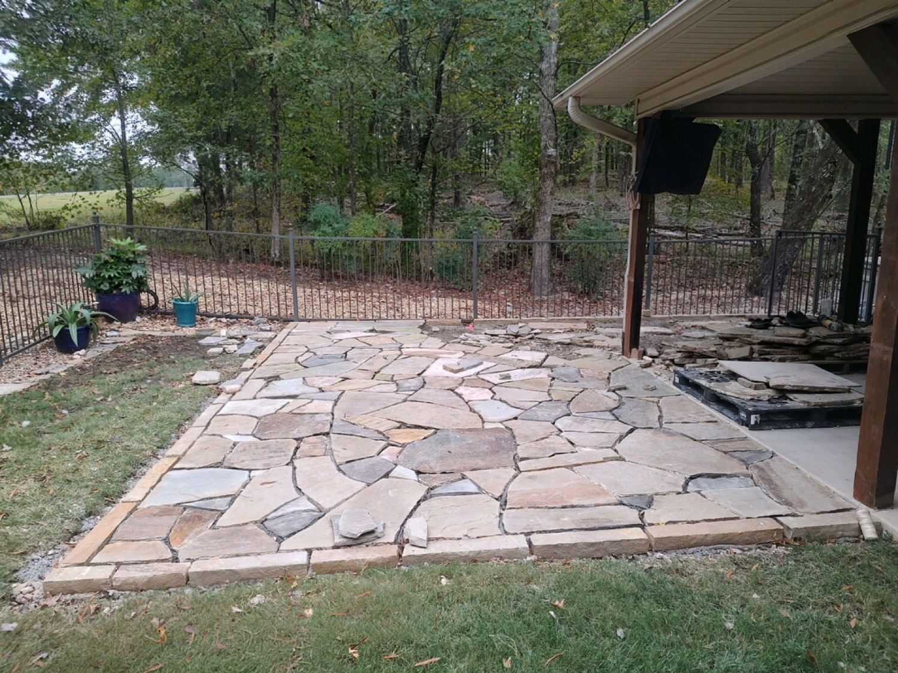
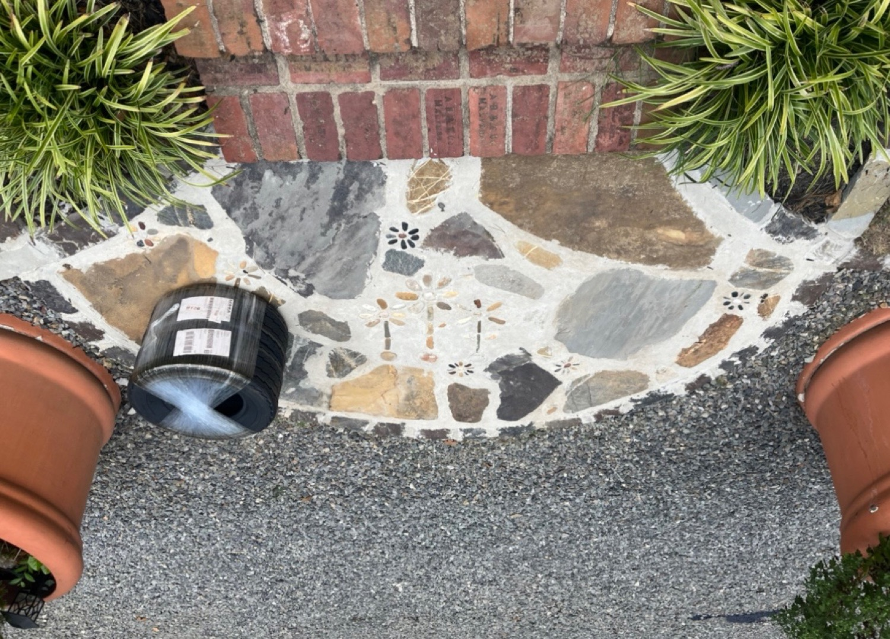

Carved concrete & stone artistry
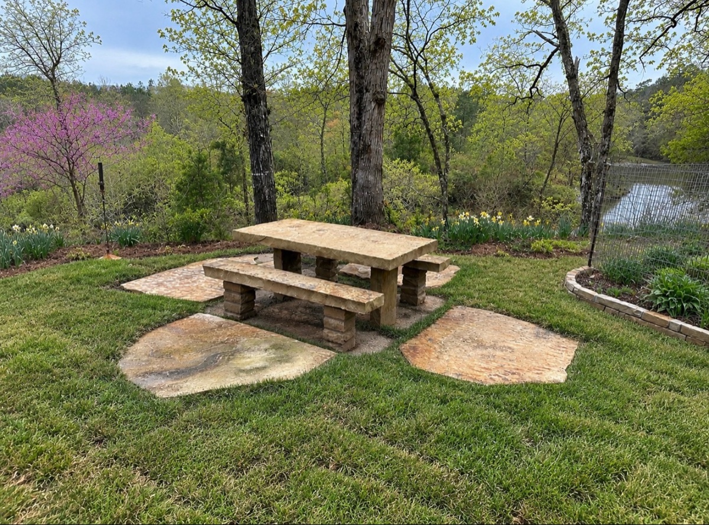


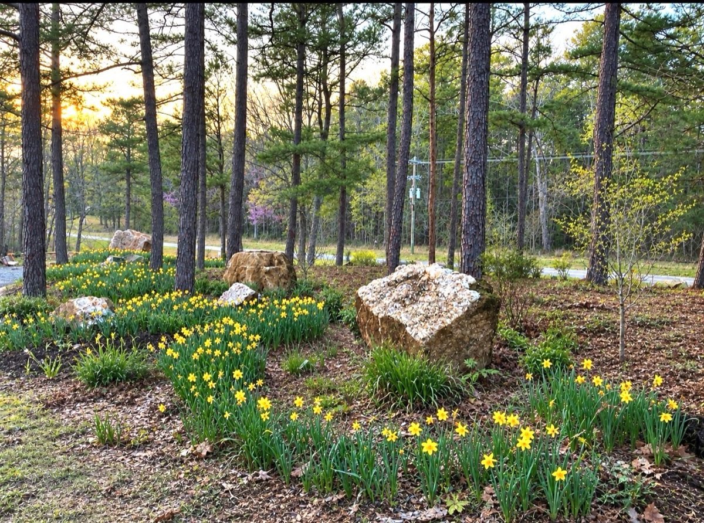
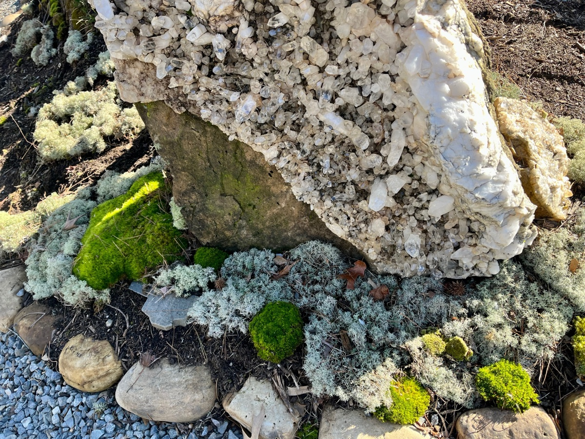
Walls, fire & water features

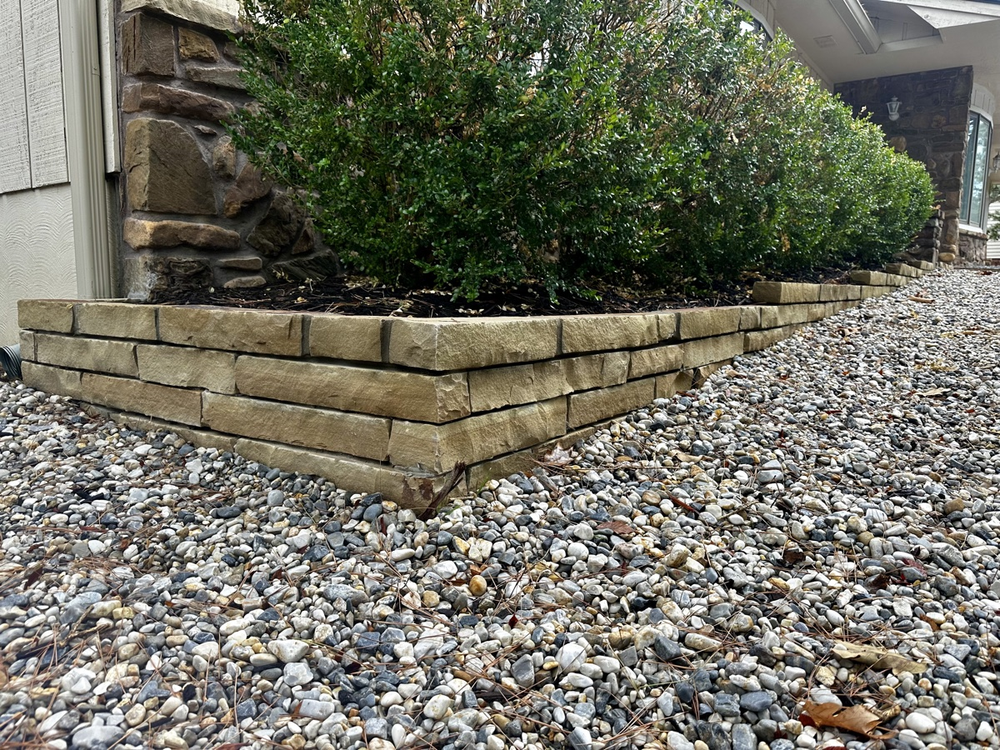


Start to finish
A flagstone walkway, before → during → after — reset by hand, one stone at a time.
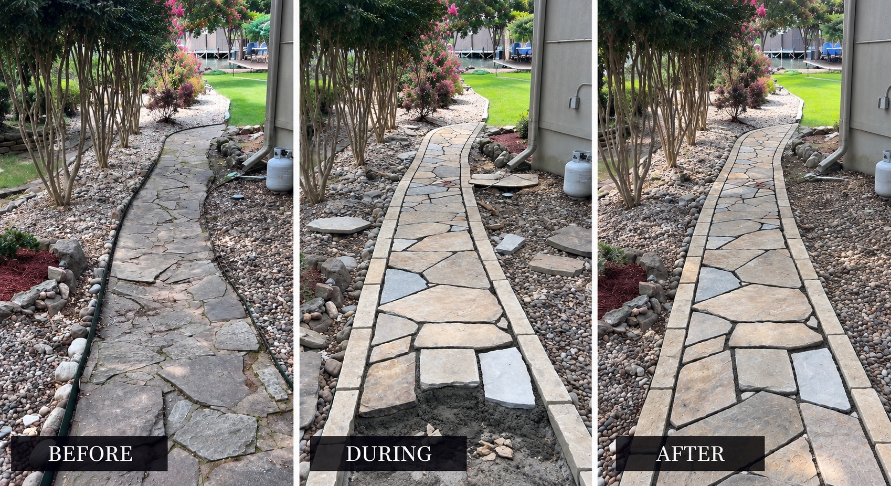
This project began by listening. The homeowner didn't simply want a prettier backyard — he wanted a space his family could actually enjoy.
That meant creating areas for grilling and entertaining, a comfortable place to gather around the fire pit on cool fall evenings, and open space for his grandchildren to play. The property also had drainage challenges that needed to be corrected as part of creating a landscape that would work well long-term.
We designed the entire space around those goals — incorporating artificial turf, native Arkansas stone, new trees and shrubs, irrigation, flagstone pathways, a dedicated grilling area, a fire-pit gathering space, and landscape lighting to create a warm atmosphere after dark.
The result isn't simply a new landscape. It's an outdoor environment designed around how this family wants to live, gather, and enjoy their property.


More from this project


This hillside was losing the battle with water — bare rock, washout, and runoff heading straight for the house every time it stormed. Instead of hiding the problem, we designed with it.
A winding dry-creek bed now carries the water where it should go, framed by boxwoods, ornamental grasses, flowering perennials, and low path lighting. The fix that started as a drainage problem became the best-looking part of the property.


A property that ran right down to the water, but with rough, unfinished ground nobody wanted to spend time on. The goal was simple: make it a place to actually use.
We built a natural-stone retaining wall to hold the grade, laid a flagstone patio, tucked in a private putting green, and added a pondless waterfall for the sound of moving water — carried all the way down toward the dock.